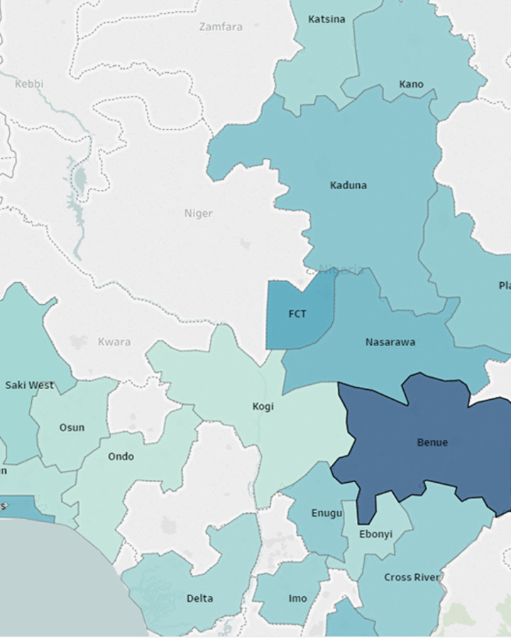

<div class="container">
    <div class="row">
        <div class="col-md-6 items">
            <div class="picture"></div>
            <div class="details">
                <div class="caption">NDR Platform</div>
            </div>
        </div>
        <div class="col-md-6">
            <div class="heading">NDR Platform</div>
            <div class="desc">
			<p>Many governments and stakeholders involved in addressing the HIV pandemic use disparate approaches to manage the thousands of data points generated across the lifetime of HIV care and treatment.  These siloed, aggregate-based data collection approaches are expensive, complex, and create barriers to consolidating individual-level HIV and communicable disease data to support effective analysis of program performance.</p>
			
			<p>In response to these challenges, InductiveHealth developed the InductiveHealth National Data Repository (NDR) Platform. 
			The NDR Platform is a <span class="color-text">unified, national-scope communicable disease surveillance system</span> that collects electronic healthcare data
			from the point of care to support individual-level data analysis across numerous dimensions important for understanding the spread of
			disease and the effectiveness of various public health interventions.</p>
			
			<p>The NDR Platform is designed for rapid deployment, with an integrated set of technology and support services that have allowed clients
			to scale their implementations to nearly a thousand electronic facility integrations with many millions of care encounter records in under 
			18 months, even in challenging, low-resource settings. As a result, national governments get access to high quality public health data 
			faster, providing new insight into how best to deploy public health resources.</p>
			
			<p><a href="#contact-us" class="color-text">Talk to us</a> to learn more or schedule a demo.</p>
		
			</div>
            <!-- Item Info Starts -->
            <ul>
                <li><strong>Category</strong>: cloud / data science / infosec / genomic</li>
                <li><strong>Client:</strong> Multiple</li>
            </ul>
            <!-- Item Info Ends --> 
            <!-- Social Icons Starts -->
            <ul class="social-icons">
                <li><a href="https://twitter.com/InductiveHealth"><i class="fa fa-twitter"></i></a></li>
                <li><a href="https://www.linkedin.com/company/inductivehealth-informatics/"><i class="fa fa-linkedin"></i></a></li>
            </ul>
            <!-- Social Icons Ends --> 
            <!-- Links Starts -->
            <div class="links">
                <div class="close-detail pull-right"><a><i class="fa fa-times"></i> Close</a></div>
            </div>
            <!-- Links Ends --> 
        </div>
    </div>
</div>